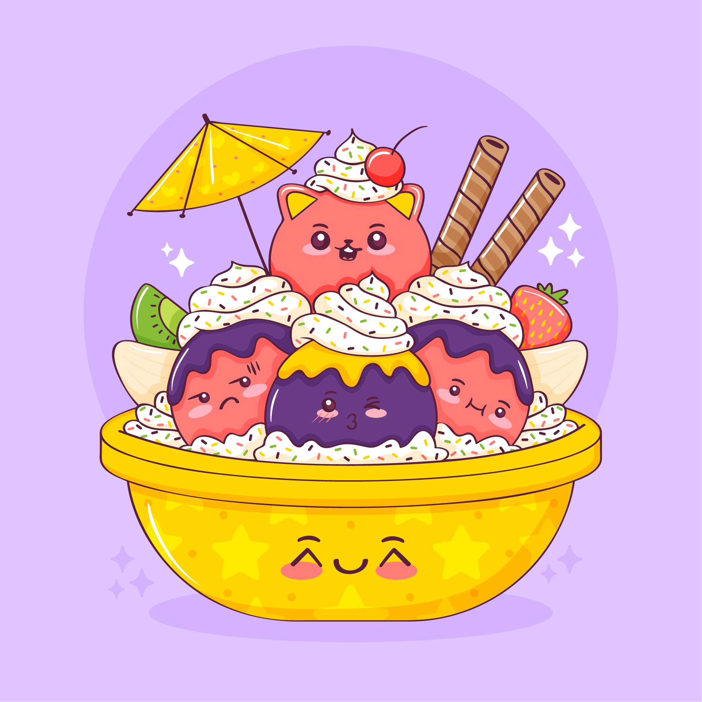
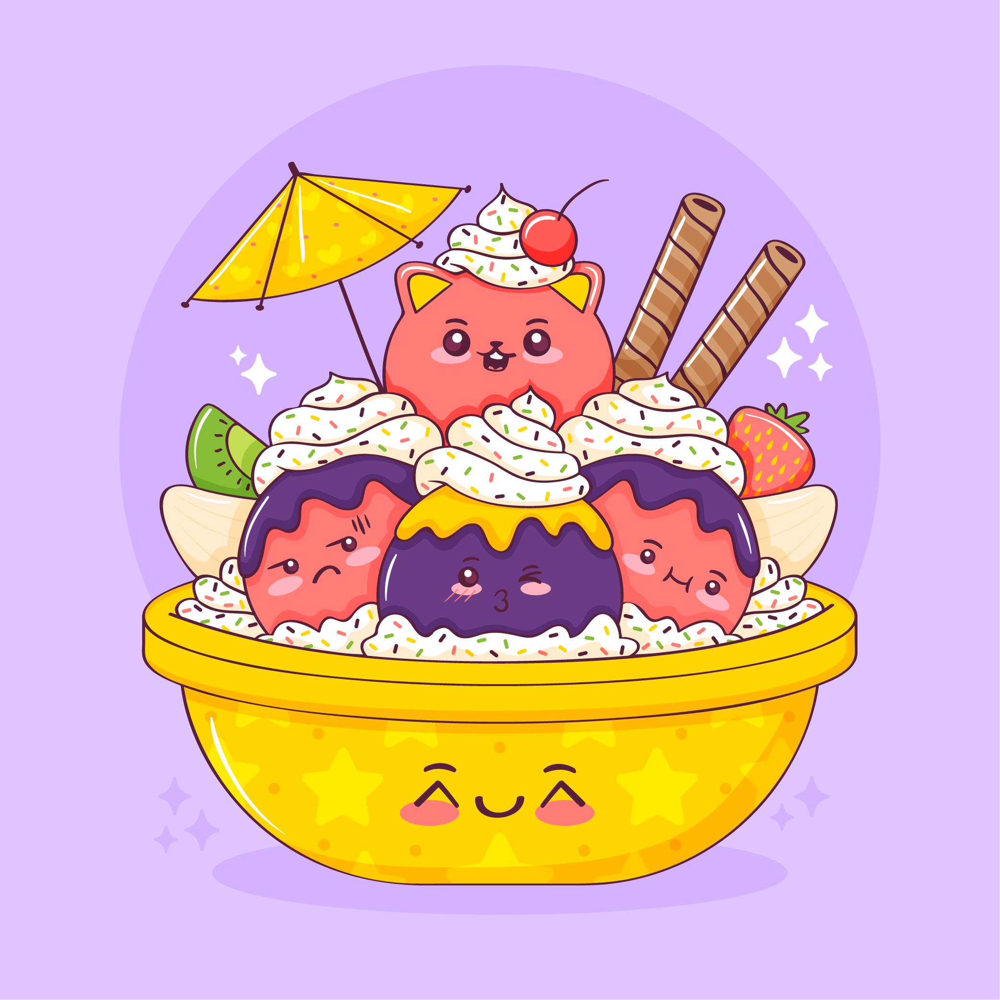

REC
no focus
Что делать, когда не можешь делать ничего
Или почему нам так сложно сконцентрироваться,
особенно когда очень надо
Почему сосредоточиться так сложно
Многозадачность
Особенно сложно сосредоточиться, когда задач много и все они — важные. Где же легендарная многозадачность, когда она так нужна вам (и всем нанимающим менеджерам этого мира)? А дело в том, что её просто не существует. Исследователи выяснили, что мозгу тяжело концентрироваться даже на двух делах одновременно. А когда в поле внимания попадает несколько важных задач, организм паникует и выделяет кортизол и адреналин — «гормоны стресса». Из-за этого мы работаем невнимательно: ошибаемся и быстро устаём.
Дофамин
С гормонами стресса всё понятно, но дальше — ещё интереснее. В нашей невозможности сосредоточиться замешана и полная противоположность стрессу — дофамин. Это вещество участвует в системе вознаграждения мозга. Причём тут он? Мы часто отвлекаемся от важной задачи на что-то более «приятное» для мозгов. Например, смотрим лайки в соцсетях. В это время и выделяется дофамин — и мы чувствуем удовольствие. Получается замкнутый круг: чем больше отвлекаешься, тем больше удовольствия получаешь.
Что снижает концентрацию внимания?
Многозадачность
Как концентрация может снижаться из-за… концентрации? Любая стрессовая ситуация (и резко меняющийся мир в целом) заставляет наш мозг постоянно «сканировать» окружающую среду на предмет опасности. Например, читать новости вместо работы. Но быть собранными всё время — невозможно. Концентрация — мышца, и она может не выдержать, если не давать ей отдохнуть.
Еда
«Быстрые углеводы» — сахар, белый хлеб, сладости — молниеносно доставляют в мозг энергию и помогают ему лучше работать. Но уходит эта энергия также быстро, как и приходит. А мы в результате попадаем на «углеводные качели»: как только действие «быстрых углеводов» заканчивается, мы чувствуем усталость и сонливость. И хотим ещё больше быстрых углеводов.
Гаджеты
Да-да, это та самая ситуация, когда на экране ноутбука — код, в наушниках — подкаст, а на компьютере фоном — ещё и видео с забавными утятами. В результате мозг пытается переключиться с одной задачи на другую — и просто не может. А чтобы вернуться к состоянию полной концентрации, человеку в среднем нужно 20 минут. Вот и получается, что чем больше времени мы проводим в гаджетах, тем больше времени затем нужно, чтобы вернуться к работе.
Как концентрироваться лучше, чем золотая рыбка (то есть дольше трёх секунд)
5 простых (на самом деле не очень) советов
Представьте небо и облака
Или листья в ручье. Тут дело в лёгкой медитации, которая помогает успокоиться. Ведь часто именно тревожные мысли о сложных задачах как раз и мешают эти сложные задачи делать. В такие моменты можно закрыть глаза и представить, что чистое небо — это вы, а облака — тревожные мысли. И сколько бы их ни было — ясное небо всегда будет где-то там, за тучами, и никуда не денется. Это упражнение поможет вернуться в настоящий момент, а не волноваться о потенциальных проблемах из будущего.
Включите музыку
Но не любую, и не любимую. Любимая может быть связана с сильными положительными эмоциями, которые тоже очень сильно отвлекают. Подойдёт тихая, спокойная, умеренно-ритмичная. Можно вообще попробовать включить плейлист c «белым шумом» или нейромузыкой.
Прогуляйтесь
Или даже пробегитесь. Лучше найти парк или лес: один эксперимент показал, что созерцание природы повышает концентрацию, в то время как после просмотра городских пейзажей она наоборот понижается. Можно совместить прогулку с физическими упражнениями или бегом — так в мозг поступит ещё больше кислорода и он будет лучше работать. Но и простая двадцатиминутная прогулка — тоже отличный вариант.
Хорошо ешьте
Мы — не ваша бабушка, но это правда важно. Выбирайте продукты, которые препятствуют резким скачкам сахара в крови. Например, с высоким содержанием клетчатки: овощи, ягоды, бобовые (нут, чечевица, фасоль), коричневый рис, хлеб из цельнозерновой пшеницы.
Читайте
Настоящие бумажные книги. Это правда помогает с концентрацией: чтобы прочитать пост в соцсети, достаточно нескольких минут или даже секунд. А вот интересная книга способна затянуть и на несколько часов и круто тренирует направленное внимание.
А можно в картинках?
 
